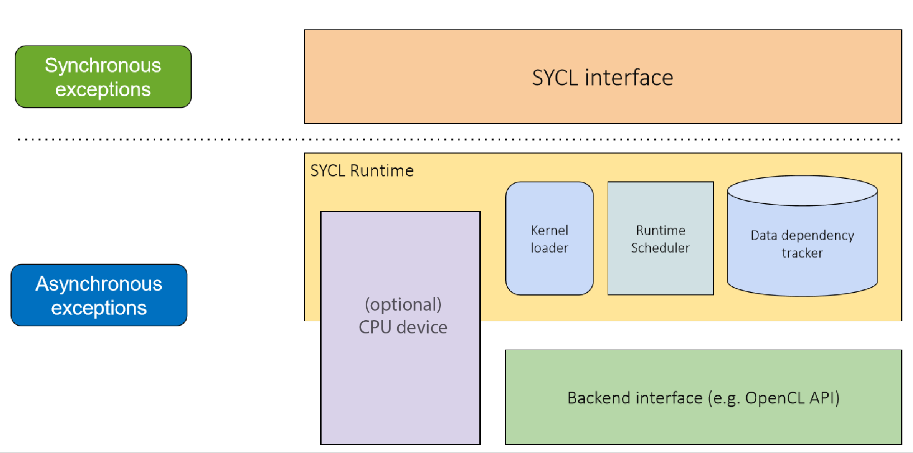

<!-- Ideally, only the markdown below needs editting to change slides. Focus on content! --> ## Handling Errors and Debugging --- ## Learning Objectives <ul> <li> Learn about how SYCL handles errors <li> Learn about the difference between synchronous and asynchronous exceptions <li> Learn how to handle exceptions and retrieve further information <li> Learn about the host device and how to use it </ul> --- #### SYCL exceptions <ul> <li> In SYCL errors are handled by throwing exceptions. <li> It is crucial that these errors are handled, otherwise your application could fail in unpredictable ways. <li> In SYCL there are two kinds of error: <ul> <li> Synchronous errors (thrown in user thread). <li> Asynchronous errors (thrown by the SYCL scheduler). </ul> </ul> --- #### Handling errors <pre><code class="codesize2" data-trim data-noescape data-line-numbers=""> int main() { queue q(); /* Synchronous code */ q.submit([&](handler &cgh) { /* Synchronous code */ cgh.single_task<add>(bufO.get_range(), [=](id<1> i) { /* Asynchronous code */ }); }); } </code></pre> <div class="bulletsized2"> <ul> <li> Kernels run asynchronously on the device, and will throw asynchronous errors. <li> Everything else runs synchronously on the host, and will throw synchronous errors. </ul> </div> --- #### SYCL exceptions  --- #### Handling errors <pre><code class="codesize2" data-trim data-noescape data-line-numbers=""> class add; int main() { queue q(); /* Synchronous code */ q.submit([&](handler &cgh) { /* Synchronous code */ cgh.single_task<add>([=](id<1> i) { /* Asynchronous code */ }); }).wait(); } </code></pre> <div class="bulletsized2"> <ul> <li> Code on the device runs asynchronously <li> If errors are not handled, the application can fail. <li> SYCL 2020 provides a default async handler that will call std::terminate when an asynchronous error is thrown. </ul> </div> --- <pre><code class="codesize1" data-trim data-noescape data-line-numbers=""> class add; int main() { std::vector<float> dA{ 7, 5, 16, 8 }, dB{ 8, 16, 5, 7 }, dO{ 0, 0, 0, 0 }; <mark>try {</mark> queue gpuQueue(gpu_selector{}); buffer bufA{dA}; buffer bufB{dB}; buffer bufO{dO}; gpuQueue.submit([&](handler &cgh) { auto inA = accessor{bufA, cgh, read_only}; auto inB = accessor{bufB, cgh, read_only}; auto out = accessor{bufO, cgh, write_only}; cgh.single_task<add>(bufO.get_range(), [=](id<1> i) { out[i] = inA[i] + inB[i]; }); }).wait(); <mark>} catch (...) { /* handle errors */ }</mark> } </code></pre> <div class="bulletsized2"> <ul> <li> Synchronous errors are typically thrown by SYCL API functions. <li> In order to handle all SYCL errors you must wrap everything in a try-catch block. </ul> </div> --- <pre><code class="codesize1" data-trim data-noescape data-line-numbers=""> class add; int main() { std::vector<float> dA{ 7, 5, 16, 8 }, dB{ 8, 16, 5, 7 }, dO{ 0, 0, 0, 0 }; try{ queue gpuQueue(gpu_selector{}, <mark>async_handler{}</mark>); buffer bufA{dA}; buffer bufB{dB}; buffer bufO{dO}; gpuQueue.submit([&](handler &cgh) { auto inA = accessor{bufA, cgh, read_only}; auto inB = accessor{bufB, cgh, read_only}; auto out = accessor{bufO, cgh, write_only}; cgh.single_task<add>(bufO.get_range(), [=](id<1> i) { out[i] = inA[i] + inB[i]; }); }).wait(); <mark>gpuQueue.throw_asynchronous();</mark> } catch (...) { /* handle errors */ } </code></pre> <div class="bulletsized1"> <ul> <li> Asynchronous errors errors that may have occurred will be thrown after a command group has been submitted to a queue. <ul> <li> To handle these errors you must provide an async handler when constructing the queue object. </ul> <li> Must also call the throw_asynchronous or wait_and_throw member functions of the queue class. <li> This will pass the exceptions to the async handler in the user thread so they can be thrown. </ul> </div> --- <pre><code class="codesize2" data-trim data-noescape data-line-numbers=""> class add; int main() { std::vector<float> dA{ 7, 5, 16, 8 }, dB{ 8, 16, 5, 7 }, dO{ 0, 0, 0, 0 }; try{ queue gpuQueue(gpu_selector{}, <mark>[=](exception_list eL) { for (auto e : eL) { std::rethrow_exception(e); } }</mark>); buffer bufA{dA}; buffer bufB{dB}; buffer bufO{dO}; gpuQueue.submit([&](handler &cgh) { auto inA = accessor{bufA, cgh, read_only}; auto inB = accessor{bufB, cgh, read_only}; auto out = accessor{bufO, cgh, write_only}; cgh.single_task<add>(bufO.get_range(), [=](id<1> i) { out[i] = inA[i] + inB[i]; }); }).wait(); gpuQueue.throw_asynchronous(); } catch (...) { /* handle errors */ } } </code></pre> <div class="bulletsized1"> <ul> <li> The async handler is a C++ lambda or function object that takes as a parameter an exception_list <li> The exception_list class is a wrapper around a list of exception_ptrs which can be iterated over <li> The exception_ptrs can be rethrown by passing them to std::rethrow_exception </ul> </div> --- <pre><code class="codesize2" data-trim data-noescape data-line-numbers=""> int main() { std::vector<float> dA{ 7, 5, 16, 8 }, dB{ 8, 16, 5, 7 }, dO{ 0, 0, 0, 0 }; try { queue gpuQueue(gpu_selector{}, [=](exception_list eL) { for (auto e : eL) { std::rethrow_exception(e); } }); ... gpuQueue.throw_asynchronous(); } catch (const <mark>std::exception</mark>& e) { <mark>std::cout << “Exception caught: ” << e.what() << std::endl;</mark> } } </code></pre> <div class="bulletsized1"> <ul> <li> Once rethrown and caught, a SYCL exception can provide information about the error <li> The what member function will return a string with more details </ul> </div> --- <pre><code class="codesize2" data-trim data-noescape data-line-numbers=""> int main() { std::vector<float> dA{ 7, 5, 16, 8 }, dB{ 8, 16, 5, 7 }, dO{ 0, 0, 0, 0 }; try { queue gpuQueue(gpu_selector{}, [=](exception_list eL) { for (auto e : eL) { std::rethrow_exception(e); } }); ... gpuQueue.throw_asynchronous(); } catch (const <mark>sycl::exception</mark>& e) { std::cout << “Exception caught: ” << e.what(); <mark>std:: cout << “ With OpenCL error code: ”</mark> <mark><< e.get_cl_code() << std::endl;</mark> } } </code></pre> <div class="bulletsized1"> <ul> <li> In SYCL 1.2.1, if the exception has an OpenCL error code associated with it this can be retrieved by calling the get_cl_code member function <li> If there is no OpenCL error code this will return CL_SUCCESS <li> SYCL 2020 provides the error_category_for templated free function that allows checking for the category of the exception depending on the backend used (e.g. backend::opencl), and e.code().value() will correspond to the backend error code. </ul> </div> --- <pre><code class="codesize1" data-trim data-noescape data-line-numbers=""> int main() { std::vector<float> dA{ 7, 5, 16, 8 }, dB{ 8, 16, 5, 7 }, dO{ 0, 0, 0, 0 }; queue gpuQueue(gpu_selector{}, [=](exception_list eL) { for (auto e : eL) { std::rethrow_exception(e); } }); context gpuContext = gpuQueue.get_context(); try { ... gpuQueue.wait_and_throw(); } catch (const sycl::exception& e) { <mark>if (e.has_context()) {</mark> <mark>if (e.get_context() == gpuContext) {</mark> <mark>/* handle error */</mark> <mark>}</mark> <mark>}</mark> } } </code></pre> <div class="bulletsized2"> <ul> <li> The has_context member function will tell you if there is a SYCL context associated with the error <li> If that returns true then the get_context member function will return the associated SYCL context object </ul> </div> --- ## Exception Types <ul> <li> SYCL 2020 has a single sycl::exception type which provides different error codes <ul> <li> e.g., errc::runtime, errc::kernel </ul> </ul> --- ## Debugging SYCL Kernel Functions <ul> <li> Top debugging tip: use CPU devices during development as much as is appropriate. <li> SYCL 2020 only guarantees that a device will always be available. <li> We can query the host_debuggable device aspect to check for host-level type debugging support. Such devices allow us to debug a SYCL kernel function using a standard C++ debugger (e.g., gdb). </ul> --- <pre><code class="codesize1" data-trim data-noescape data-line-numbers=""> class add; int main() { std::vector<float> dA{ 7, 5, 16, 8 }, dB{ 8, 16, 5, 7 }, dO{ 0, 0, 0, 0 }; try{ queue <mark>hostQueue(aspect_selector<aspect::host_debuggable>()</mark>, async_handler{}); buffer bufA{dA}; buffer bufB{dB}; buffer bufO{dO}; hostQueue.submit([&](handler &cgh) { auto inA = accessor{bufA, cgh, read_only}; auto inB = accessor{bufB, cgh, read_only}; auto out = accessor{bufO, cgh, write_only}; cgh.single_task<add>(bufO.get_range(), [=](id<1> i) { out[i] = inA[i] + inB[i]; }); }); hostQueue.wait_and_throw(); } catch (...) { /* handle errors */ } } </code></pre> <div class="bulletsized1"> <ul> <li> In general, a SYCL application can be debugged on the CPU device by switching the queue for a CPU queue <li> Replacing the device selector for the aspect_selector will ensure that the queue submits all work to the device with the requested aspects, in this case a host_debuggable device </ul> </div> --- ## Questions --- #### Exercise Lesson_Materials/Lecture_03_Error_Handling * Introduce a synchronous error, and * Introduce an asynchronous error. * Catch them and report them without aborting the program (so we get to see both error messages). * The try/catch framework is already in place.